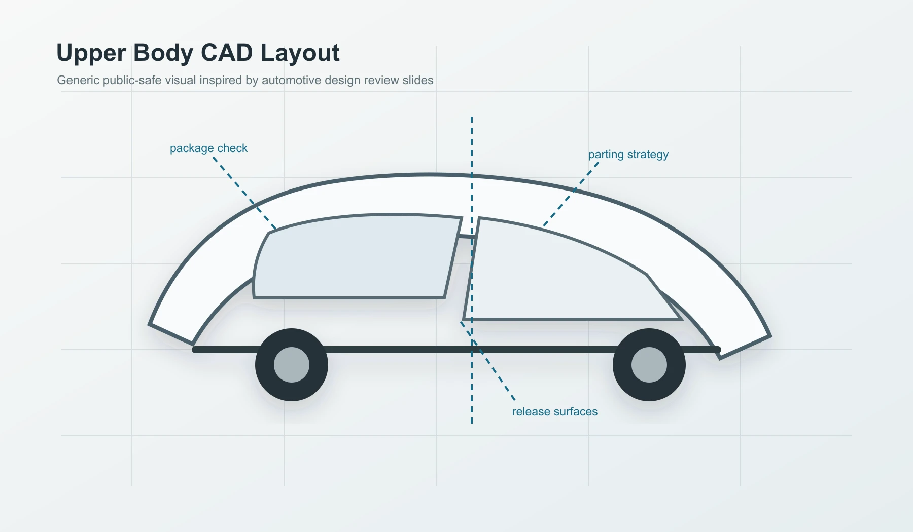

Upper Body Design
Current Honda Development and Manufacturing of America role supporting upper body part maturation, CAD data, drawings, packaging, manufacturability, and cross-functional release work.

Public-Safe Visuals
These generic visuals are meant to match the kind of engineering story shown in a technical slide deck: CAD layout, part maturation, manufacturability, and release coordination.
Scope
The public version of this page focuses on transferable engineering responsibilities without exposing program details, proprietary geometry, or internal images.
- Part maturationSupport release by creating and updating CAD data and drawings for multiple SUV programs.
- Design balanceDevelop layouts and detailed designs while balancing packaging, regulation, performance, commonality, cost, weight, and investment targets.
- Manufacturing process awarenessDesign around sheet metal forming, injection molding, vacuum forming, and practical supplier/manufacturing constraints.
- Cross-functional coordinationWork with design, styling, CAE/test, manufacturing, and purchasing to identify risks early.
- CountermeasuresInvestigate interferences and technical concerns, then implement solutions that protect project milestones.
- DocumentationUse drawings and release data to communicate manufacturable, validated design intent.
Engineering Themes
The role builds on the same habits developed through Baja and manufacturing internships: technical ownership, practical constraints, and repeatable design communication.
- Translate high-level package needs into part-level CAD and drawing work.
- Resolve spatial conflicts early through 3D layouts and interference reviews.
- Balance design intent against manufacturability, cost, weight, performance, and timing.
- Communicate across teams so design changes are understood before they become late project risks.